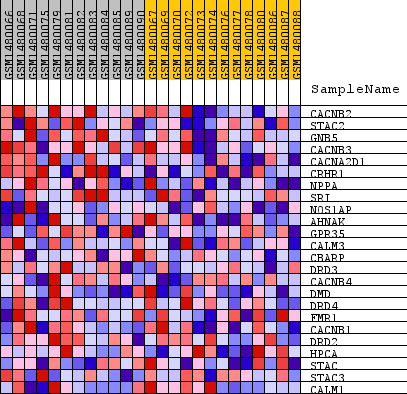
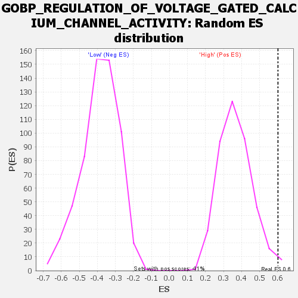

Profile of the Running ES Score & Positions of GeneSet Members on the Rank Ordered List
| Dataset | WG6v3.CPT1A.cls#High_versus_Low.CPT1A.cls#High_versus_Low_repos |
| Phenotype | CPT1A.cls#High_versus_Low_repos |
| Upregulated in class | High |
| GeneSet | GOBP_REGULATION_OF_VOLTAGE_GATED_CALCIUM_CHANNEL_ACTIVITY |
| Enrichment Score (ES) | 0.60175127 |
| Normalized Enrichment Score (NES) | 1.6487138 |
| Nominal p-value | 0.012106538 |
| FDR q-value | 1.0 |
| FWER p-Value | 1.0 |
| SYMBOL | TITLE | RANK IN GENE LIST | RANK METRIC SCORE | RUNNING ES | CORE ENRICHMENT | |
|---|---|---|---|---|---|---|
| 1 | CACNB2 | CACNB2 | 231 | 0.130 | 0.1750 | Yes |
| 2 | STAC2 | STAC2 | 475 | 0.100 | 0.3062 | Yes |
| 3 | GNB5 | GNB5 | 1031 | 0.071 | 0.3800 | Yes |
| 4 | CACNB3 | CACNB3 | 1182 | 0.067 | 0.4685 | Yes |
| 5 | CACNA2D1 | CACNA2D1 | 2714 | 0.039 | 0.4462 | Yes |
| 6 | CRHR1 | CRHR1 | 3086 | 0.035 | 0.4776 | Yes |
| 7 | NPPA | NPPA | 3123 | 0.035 | 0.5257 | Yes |
| 8 | SRI | SRI | 3728 | 0.029 | 0.5362 | Yes |
| 9 | NOS1AP | NOS1AP | 3959 | 0.027 | 0.5632 | Yes |
| 10 | AHNAK | AHNAK | 4427 | 0.023 | 0.5725 | Yes |
| 11 | GPR35 | GPR35 | 4862 | 0.020 | 0.5794 | Yes |
| 12 | CALM3 | CALM3 | 4972 | 0.019 | 0.6018 | Yes |
| 13 | CBARP | CBARP | 5708 | 0.015 | 0.5857 | No |
| 14 | DRD3 | DRD3 | 7554 | 0.008 | 0.5015 | No |
| 15 | CACNB4 | CACNB4 | 7723 | 0.007 | 0.5029 | No |
| 16 | DMD | DMD | 7794 | 0.007 | 0.5090 | No |
| 17 | DRD4 | DRD4 | 7817 | 0.007 | 0.5175 | No |
| 18 | FMR1 | FMR1 | 8841 | 0.003 | 0.4697 | No |
| 19 | CACNB1 | CACNB1 | 8989 | 0.003 | 0.4665 | No |
| 20 | DRD2 | DRD2 | 9120 | 0.003 | 0.4636 | No |
| 21 | HPCA | HPCA | 9969 | 0.000 | 0.4200 | No |
| 22 | STAC | STAC | 12499 | -0.008 | 0.3011 | No |
| 23 | STAC3 | STAC3 | 14001 | -0.015 | 0.2455 | No |
| 24 | CALM1 | CALM1 | 15172 | -0.024 | 0.2191 | No |

